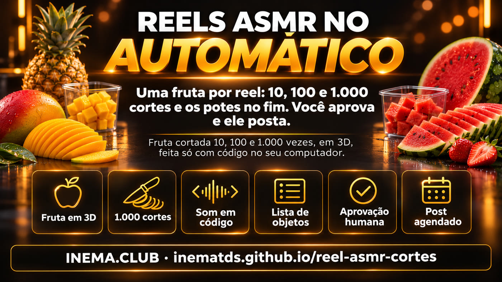

Você pode ter 3 reels satisfatórios por semana sem gravar nada. A Fábrica de reels ASMR faz por você.
Vídeo de fruta sendo cortada prende o olho, mas fazer um por um cansa e trava o canal. Aqui o reel sai do seu computador, de graça, e só vai ao ar o que você aprovar.
Reels "satisfatórios" (ASMR) seguram as pessoas na tela, mas produzir toda semana dá trabalho. Este kit faz um reel vertical de 36 segundos em que uma fruta em 3D é cortada 10, 100 e 1.000 vezes, com o som de cada corte e três potes no final. Tudo é desenhado por código no seu computador: sem câmera, sem IA de vídeo e sem pagar por render. Uma lista de frutas vira uma série; um agente (Claude Code ou Codex) faz 3 por semana, você assiste e aprova, e um script posta no Instagram pela API oficial. Para usar: Node.js, ffmpeg e, se quiser o post automático, uma conta profissional do Instagram.

Vídeo
Entenda em 2 minutos
Do gancho ao fim: a lista de frutas, os cortes de 10, 100 e 1.000 vezes feitos no seu computador e a aprovação que fica com você.
Uma promessa simples no primeiro quadro e um número que só cresce. A pessoa fica para ver os 1.000 cortes e o pote no fim.
0 s · a capa já diz o que vai acontecer3 s · 10 cortes: as fatias abrem e mostram o miolo24 s · rodada de 1.000: vira um monte de pedacinhos34 s · os 3 potes e a pergunta para comentar
📈 Cresce 10 vezes a cada rodada
10, depois 100, depois 1.000 cortes, cada rodada mais rápida. O contador grande no topo deixa a promessa visível o tempo todo.
🔊 Cada corte tem som
A batida da lâmina na tábua, o estalo das sementes, o pedaço caindo no pote. Tudo cai no quadro exato do corte, porque o som e a imagem leem a mesma lista.
🫙 Termina com uma pergunta
"Qual pote você comeria?" Três resultados lado a lado convidam o comentário, sem pedir like nem link.
A semana
Como fica a sua semana: você só aprova
Duas tarefas agendadas fazem o trabalho repetitivo. A decisão do que vai ao ar continua sendo sua.
Segunda 9h: o agente faz 3 reels→Você assiste e aprova→Seg, qua e sex 18h: posta 1 aprovado
🍊 Uma lista vira série
Cada linha da lista é uma fruta (maracujá, cebola roxa, goiaba, tomate…). O enquadramento, o ritmo e o som ficam iguais; só o objeto muda. É isso que faz o canal parecer uma série.
✋ Nada vai ao ar sem você
As tarefas nunca marcam um reel como aprovado. Você assiste, e só o que você aprova entra na fila de post.
💸 Custo de render: zero
O vídeo é desenhado no seu computador. O que você paga é só o plano do agente que já usa. O app da Meta e o GitHub Pages são grátis.
Prefere postar à mão? Pode parar no passo de aprovar: o app do Instagram agenda posts, e a legenda de cada reel já vem pronta num arquivo de texto. A parte do post automático é opcional. Como usar ↓
Parte técnica
O kit: para quem quer montar a fábrica
Daqui para baixo é a parte técnica: instalar, fazer o primeiro reel, ligar a série e o post. Você não precisa desta parte para entender o que está acima.
O que é
Um projeto HyperFrames + Three.js com três peças
HyperFrames transforma uma página HTML em vídeo, quadro a quadro. Three.js desenha o 3D dentro dessa página.
🍈 O reel
index.html + js/mundo.js: a fruta é uma elipse dividida em cubinhos; um shader corta cada cubinho pela elipse e pinta a face com a cor daquele ponto de dentro (casca, pele, polpa, sementes, anéis).
⏱️ Um relógio só
js/cortes.js é a lista de cortes (1.110 no total). O contador, as lâminas e o som leem essa lista. A semente do aleatório muda por reel, então cada um corta diferente.
📦 A fábrica
objetos.csv + ferramentas/: preparar o próximo reel, fazer (som, conferência, fotos, render), aprovar e postar. Dois prompts prontos em agendar/.
Como funciona
De uma linha da lista ao post
Cada objeto passa por 5 status no objetos.csv. Só um passa por você.
Conta profissional do Instagram (criador ou empresa), conta grátis de desenvolvedor da Meta e um repositório público no GitHub para servir o vídeo. Passo a passo no SETUP.md.
Guia de uso · passo a passo
Do primeiro reel à série no automático
Os passos 1 a 4 fazem reels. O 5 e o 6 são para postar sozinho e agendar.
1
Baixar e fazer o reel de exemplo
O som tem de vir antes do render. A conferência precisa terminar sem erro. O vídeo sai com 36 s, em 1080 × 1920.
Pega o primeiro objeto pendente do objetos.csv e cria a pasta dele. Se o objeto não estiver entre os 9 prontos, o comando sai com código 2 e o objeto.js da pasta vem marcado PREENCHER: troque as medidas e as cores como manda o RECEITA.md.
node ferramentas/novo-reel.mjs # 1ª vez: reels/2026-11-15-maracuja (o 1º da lista)node ferramentas/novo-reel.mjs goiaba # ou um objeto específico
3
Fazer o reel
Som, conferência, 3 fotos paradas e render. O resultado vai para prontos/<pasta>/ com reel.mp4, as fotos e legenda.txt. Se um passo falhar, o objeto volta para pendente e o motivo fica em FALHOU.md.
bash ferramentas/fazer-reel.sh maracuja
4
Assistir e aprovar
Só você marca aprovado. Sem argumentos, o comando lista todos os objetos e o status de cada um.
Crie o app na Meta, gere o token e o repositório público de links (SETUP.md, partes 2 e 3). Cole o token você mesmo no .env, nunca num chat. O ensaio mostra o que seria postado sem enviar nada.
cp .env.exemplo .env # preencha IG_USER_ID, IG_ACCESS_TOKEN, LINKS_DIR e LINKS_URLnode ferramentas/postar-instagram.mjs --ensaio
node ferramentas/postar-instagram.mjs # posta 1 aprovado
6
Agendar as duas tarefas
Os prompts estão em agendar/. Com cron e o Claude Code no terminal (troque o caminho), ou cole o prompt no app desktop do Claude e peça uma tarefa agendada no mesmo horário. O cron é o agendador do Linux e do Mac: crontab -e abre um editor de texto no terminal; cole as duas linhas no fim, salve e feche (no nano: Ctrl+O, Enter, Ctrl+X). O --allowedTools deixa a tarefa usar o terminal sozinha. No Windows, use o WSL ou o app desktop.
crontab -e
# segunda 9h: faz 3 reels (nunca posta)
0 9 * * 1 cd /caminho/reel-asmr-cortes && claude -p "$(cat agendar/1-fazer-reels.md)" --allowedTools "Bash Read Edit Write" >> agenda.log 2>&1
# seg, qua e sex 18h: posta 1 aprovado
0 18 * * 1,3,5 cd /caminho/reel-asmr-cortes && claude -p "$(cat agendar/2-postar-aprovado.md)" --allowedTools "Bash Read" >> agenda.log 2>&1
O que foi testado
Conferido aqui, e o que falta você testar
Para você saber o que esperar antes de ligar a sua conta.
Parte
Situação
Som (som.mjs)
Rodou: 1.110 cortes, 36 s, em cerca de 1 s.
Conferência do HyperFrames
Sem erros.
Fotos paradas do reel
Tiradas do próprio projeto: são as imagens desta página.
Série (novo-reel, status, objeto sem desenho)
Testada numa cópia do projeto.
Post (postar-instagram.mjs)
Só o modo ensaio. O post real na API da Meta não foi feito aqui; faça o passo 5 com 1 reel e confira no Instagram.
Render completo do MP4
Não rodado nesta versão: rode o passo 1 na sua máquina.
Roadmap
Próximos passos
O que pode vir depois, se a série render.
Agora
Fruta em 3 rodadas + série + post no InstagramO que está neste repositório.
Depois
Mais formatos de objetoObjetos que não são elipse (cenoura, banana) e outras ferramentas além da lâmina.
Depois
Outras redesTikTok e Shorts usando o mesmo prontos/.